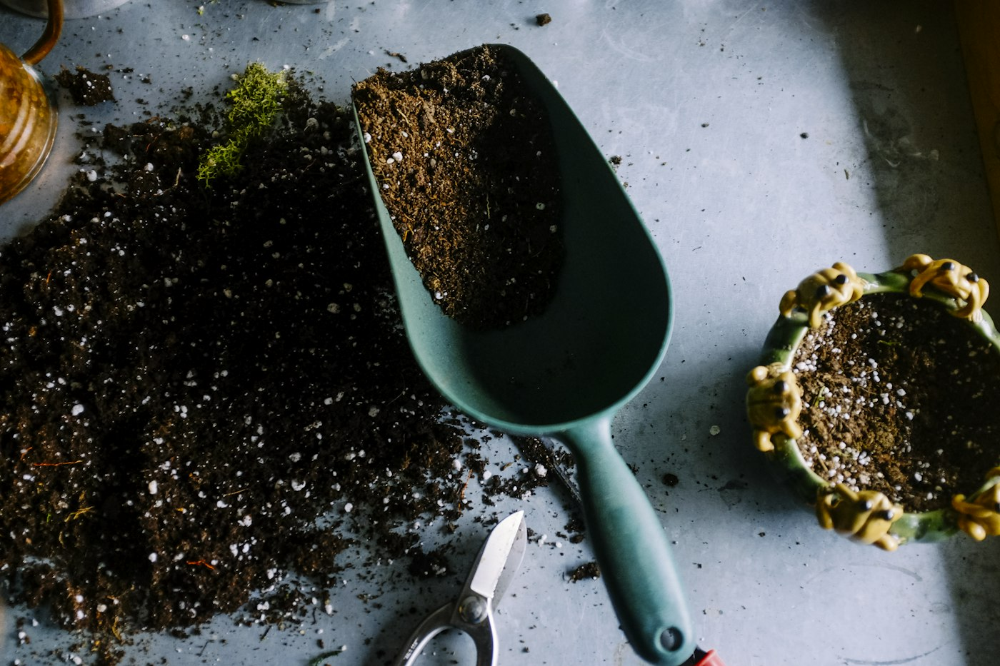
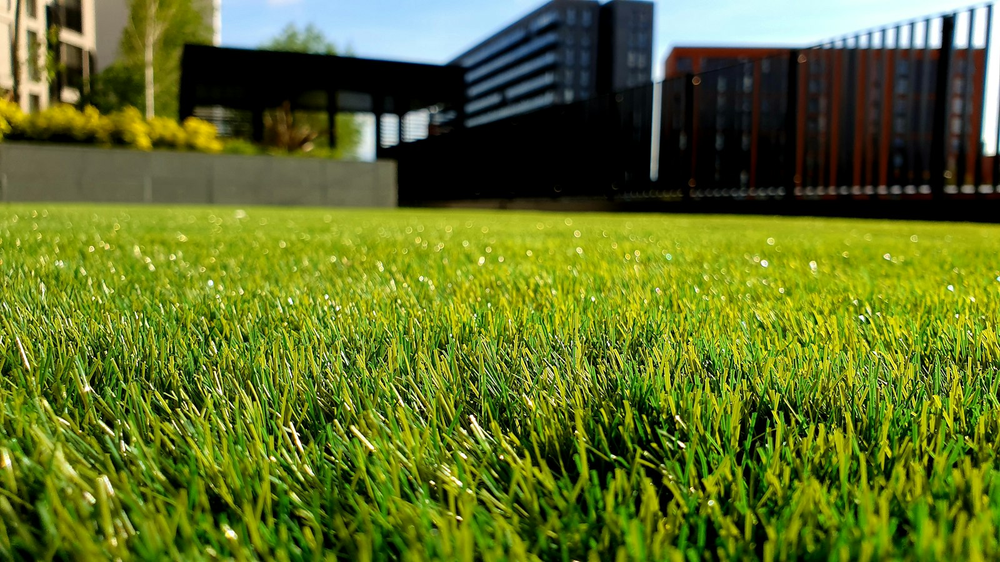

Beds and soil
We weed, edge, and mulch existing beds. When a bed is empty, we plant for the season you named, with a note on water for the first weeks.
Concept site by Michael Goss Imaging. Not a real business.

Landscaping crew
Underbough mows, edges, mulches, prunes, and plants for houses in the surrounding neighborhoods. We come to the yard. There is no shop counter.
Ask about the yard
We weed, edge, and mulch existing beds. When a bed is empty, we plant for the season you named, with a note on water for the first weeks.
Mowing, edging along walks, and a blow of the clippings off the hard surfaces. We can come on a route or for a single tidy before an event.
Shrubs and small ornamental trees that have grown into a walk or a window. Large tree removal and stump grinding are outside this crew. We will say that plainly if the tree is too big.
We look at the yard with you, or from photos if you are away, and mark what is in and out.
You get a written list: mow, beds, mulch, plants, or pruning. The list is the job.
The crew arrives in the window we set. Gates, pets, and where to park are confirmed the day before.
We leave a short note about what the yard will need next, without signing you up for anything.
Surrounding neighborhoods, close enough that the same crew can reach you and the next yard. If the drive is long, we pass. Ask with the nearest cross street. We do not publish a shop address because the work is at your property.
If the crew cannot reach the yard without one, yes. Send it with the booking, and tell us about dogs that meet people at the gate.
Either. A route is a repeating mow through the growing season. A single visit is a reset, and it ends when that list is done.
We plant and maintain. A full drawing set for patios, walls, and grading is a different trade, and we will tell you when the job has crossed that line.
Mowing waits for a drier day. Bed work can continue in light rain. We text when the day moves.
Call or send the rough size of the lawn and what you want done first.